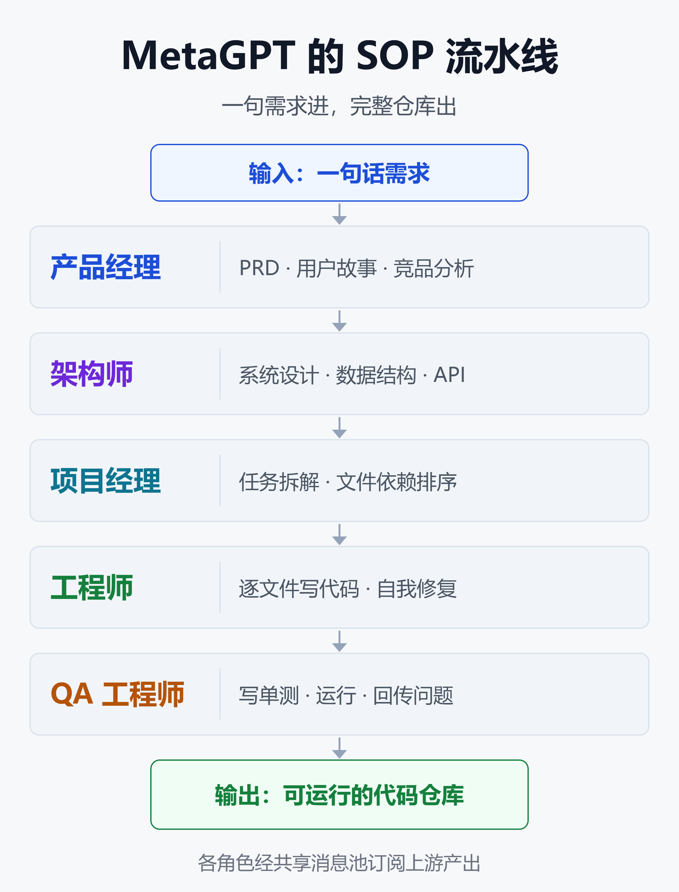
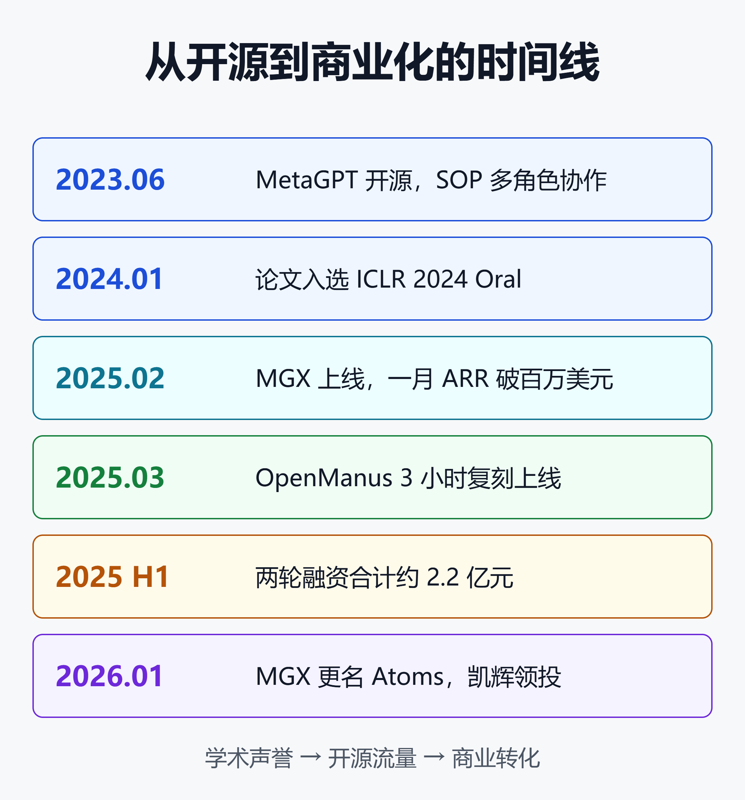

从 MetaGPT 到 Atoms：3 小时复刻 Manus 的团队，如何把 Agent 变成赚钱公司
2025 年 3 月，Manus 靠邀请码刷屏。几名实习生花 3 小时做出开源复刻版 OpenManus，第二天就冲上 GitHub 热榜。
这群人来自同一家公司：DeepWisdom（深度赋智）。他们更早的作品 MetaGPT 如今约有 7.07 万 Star、9000 个 Fork，是全球关注度最高的多智能体框架之一。
更值得看的是后半段。2025 年 2 月，团队推出商业产品 MGX，没投广告，上线一个月注册用户 50 万，订阅 ARR（年度经常性收入）突破 100 万美元。2026 年 1 月，MGX 更名 Atoms，凯辉基金领投新一轮融资。
一个像大学实验室的团队，怎么把开源框架变成一门生意？这篇文章从技术、学术、商业三条线拆开讲，最后说清它的局限和选型建议。
一、MetaGPT 是什么：Code = SOP(Team)
MetaGPT 的核心主张写在 README 里：Code = SOP(Team)。意思是把人类软件公司的标准作业流程（SOP）固化下来，交给一支由大模型扮演的团队去执行。
它内置的角色和真实公司几乎一一对应：产品经理、架构师、项目经理、工程师、QA。你输入一句需求，它输出用户故事、竞品分析、需求文档、数据结构、API 设计，最后是一个完整的代码仓库。

图中的流程是：需求先交给产品经理写 PRD 和竞品分析，架构师据此做系统设计和 API，项目经理拆任务、排文件依赖，工程师逐文件写代码，QA 写单测并把问题回传。各角色不是互相闲聊，而是通过共享消息池订阅上游的结构化产出。
为什么不让 Agent 自由对话
2023 年前后的多智能体系统，大多让 Agent 之间自由聊天。问题很快暴露：对话越长，幻觉越容易层层放大，一个角色的错误会被下游当成事实继续加工。
MetaGPT 论文把这叫做「级联幻觉」。它的解法是让每个角色产出标准化文档，而不是一段聊天记录。PRD 有固定章节，设计文档有固定格式，下游只读上游的文档。
这和人类公司的逻辑一样：靠流程和交付物协作，而不是靠群聊。论文在协作式软件工程基准上的结果显示，MetaGPT 生成的方案比当时基于聊天的多智能体系统更连贯。
两个关键机制
- 共享消息池：所有角色把产出发布到同一个池子，而不是点对点传话，避免信息丢失。
- 订阅机制：每个角色只订阅与自己相关的消息类型，比如工程师只关心设计文档和任务列表，减少上下文噪声。
这两个机制后来几乎成了多智能体框架的标配。CrewAI 的任务产出传递、LangGraph 的共享状态，都能看到类似的思路。
二、上手 MetaGPT：三条命令跑通
MetaGPT 的安装门槛不高，但有一个容易踩的坑：官方要求 Python 版本在 3.9 到 3.12 之间（不含 3.12）。用最新版 Python 会直接装不上依赖。另外还需要预装 Node 和 pnpm。
安装、初始化配置、生成项目：
pip install --upgrade metagpt
metagpt --init-config
metagpt "Create a 2048 game"
第二条命令会生成 ~/.metagpt/config2.yaml。国内团队可以接任何 OpenAI 兼容接口，下面以 DeepSeek 为例：
llm:
api_type: "openai" # OpenAI 兼容接口
model: "deepseek-chat"
base_url: "https://api.deepseek.com/v1"
api_key: "YOUR_API_KEY"
生成的仓库默认放在 ./workspace 下。也可以把它当 Python 库调用：
from metagpt.software_company import generate_repo
repo = generate_repo("Create a 2048 game")
print(repo) # 打印仓库文件结构
Data Interpreter：被低估的另一半
很多人只知道 MetaGPT 能「一句话生成软件」，忽略了 v0.8.0 引入的 Data Interpreter。它是一个能自己规划、写代码、执行、调试的数据分析 Agent，可以调用 notebook、浏览器、shell 等工具。
import asyncio
from metagpt.roles.di.data_interpreter import (
DataInterpreter,
)
async def main():
di = DataInterpreter()
await di.run("分析 sklearn Iris 数据集并画图")
asyncio.run(main())
官方称它在机器学习、数学推理和开放任务上拿下当时最好成绩（SOTA）。对数据分析场景来说，它比完整的软件公司流水线更实用，因为任务边界更清晰。
三、学术飞轮：一家「像实验室」的公司
DeepWisdom 不太像典型的创业公司。据 36 氪报道，公司内部鼓励发论文，核心代码几乎对所有成员开放，组织过几十场关于 Self-play 和 Reward Model 的研讨会。
创始人兼 CEO 吴承霖有华为、腾讯的大规模 AI 落地经历。他说过去两年扫过近 20 万篇 arXiv 论文，精读整理了 2100 篇，标记的重要研究不到 300 篇。
论文产出也确实撑得起这个定位：
- MetaGPT 论文：ICLR 2024 Oral（大会宣读，录用率前 1.2%），LLM Agent 类排名第一。
- AFlow：ICLR 2025 Oral（大会宣读，前 1.8%），用蒙特卡洛树搜索在代码化的工作流空间里自动寻找最优 Agent 工作流。
- SPO、AOT：2025 年 2 月发布的提示词优化与推理相关工作。
- NeurIPS：据 36 氪报道，团队投了 9 篇、中了 5 篇，其中 3 篇是 Oral。
AFlow 尤其值得一提。MetaGPT 的 SOP 是人写的，AFlow 则试图让机器自己搜出 SOP。这是从「手工编排」走向「自动编排」的一步，也是团队后续产品的技术方向。
开源组织 FoundationAgents
MetaGPT 仓库从 geekan/MetaGPT 迁到了 FoundationAgents 组织下，同组织还有 OpenManus、AFlow 等项目。据 36 氪报道，这个组织的 GitHub Star 总数已超过 15 万。
另一个少有人知的细节：据同一篇报道，吴承霖和通义千问技术负责人林俊旸更早推动过开源编程 Agent 项目 OpenDevin，也就是后来 OpenHands 的前身。
这段渊源可以参考 OpenHands 深度调研：从 OpenDevin 到 80K Star 开源编程 Agent 的两年进化。
OpenManus 的「3 小时复刻」不是运气。团队手里本来就有成熟的 Agent 框架和工具链，复刻本质上是一次组装。
四、从 MGX 到 Atoms：商业化三步走

时间线很清楚：2023 年 6 月开源 MetaGPT，2024 年 1 月论文中 ICLR Oral，2025 年 2 月上线 MGX，3 月做出 OpenManus，上半年完成两轮约 2.2 亿元融资。
2026 年 1 月，MGX 更名 Atoms 并拿到凯辉基金领投。整条路径可以概括为一句话：学术声誉带来开源流量，开源流量再转化成商业用户。
第一步：MGX 冷启动
MGX（MetaGPT X）2025 年 2 月 19 日上线，定位是「首个 AI Agent 开发团队」，随后拿下 Product Hunt 日榜和周榜第一。
上线时公司处境并不好。据 36 氪报道，当时融资还没到位，现金流紧张，服务器和模型额度是向 UCloud 和 AWS 赊来的，几乎没有推广预算，全靠成员剪视频和社区转发。
结果是一个月 50 万注册用户、订阅 ARR 超过 100 万美元。到 2025 年 9 月，月访问量 120 万，每天生成的应用超过 1 万个。这是开源口碑最直接的变现。
第二步：融资补弹药
据 36 氪报道，2025 年上半年 DeepWisdom 完成两轮融资，投资方包括蚂蚁集团、凯辉基金、锦秋基金、百度风投等，合计约 2.2 亿元，是国内 Coding Agent 赛道金额最高的融资。
2026 年 1 月 14 日，凯辉基金宣布领投新一轮，资金用于多智能体系统研发、产品规模化和全球市场拓展。
第三步：更名 Atoms，从写代码到做生意
2026 年 1 月 13 日，MGX 更名 Atoms。吴承霖的判断是，MGX 这个名字在英文语境里不好念，不利于触达普通用户。给一个 50 万用户的产品改名风险不小，但他认为要追 Lovable 那样的体量，必须跨出开发者圈子。
改名背后是定位升级：从「Vibe Coding」到「Vibe Business」。Atoms 不只写代码，而是内置了登录、数据库、用户鉴权、部署和支付（如 Stripe），官方称 5 分钟就能交付一个可上线运营的网站。
在一次典型的开发流程中，Atoms 会调用 7 个不同角色的 Agent，其中两个值得单独说：
- Iris（调研 Agent）：开发前做市场和用户调研，产出摘要、图表和社媒内容。官方评测称其调研能力超过 Gemini 2.5 Pro、Kimi、Perplexity 等。
- Sarah（SEO Agent）：为用户做出来的产品构建自动化 SEO 策略，帮产品拿到搜索引擎的自然流量。
这其实是把 MetaGPT 的 SOP 从「软件公司」扩展到了「创业公司」：调研、产品、开发、部署、营销、数据分析，全部交给 Agent 团队。
打的是性价比
DeepWisdom 的另一张牌是成本。官方称 Atoms 只用竞品约 20% 的成本，效果比竞品好 45% 以上，对标的是 Lovable 和 Replit。吴承霖的原话是：「用户仍然对价格敏感。」
需要提醒的是，这组数字来自厂商自己的评测，目前没有看到第三方的独立复现。
五、冷静看：MetaGPT 和 Atoms 的局限
热度之外，有几个问题绕不开。
开源框架迭代放缓
MetaGPT 的 GitHub Releases 页面上，最新正式版本仍是 v0.8.x 系列。Python 版本被限制在 3.12 以下，在 2026 年已经显得落后。
团队重心明显转向了 Atoms，开源框架更像是研究成果的发布渠道，而不是一个持续迭代的生产级 SDK。这不等于停更，但选型时要把维护节奏算进去。
固定 SOP 是优点，也是枷锁
第三方评测 markaicode 在 2026 年 8 月的多智能体框架横评中给出了很中肯的判断：如果任务恰好是「从需求规格自动生成软件」，MetaGPT 固定的 PM/架构/工程/QA 流水线比通用框架需要的定制代码更少。
但同一作者也指出，MetaGPT 会把你锁进它的 SOP 模式。一旦业务流程不是「软件公司」那一套，改造成本会迅速上升。
代码执行没有默认沙箱
MetaGPT 和 Data Interpreter 都会执行模型生成的代码。框架默认不提供沙箱隔离，生产环境必须自己套容器或虚拟机。它作为开源库也没有任何合规认证，合规责任全在部署方。
沙箱的选型思路可以参考 代码沙箱：给 AI Agent 一台"炸不坏"的云电脑——原理、方案与价值全解。
Atoms 的口碑分化
Product Hunt 上对 MGX/Atoms 的评价并不一边倒。好评集中在上手快、能出完整产品，抱怨集中在：建议偏泛、编辑界面别扭、上下文处理和稳定性不足。
少数用户反映了更严重的问题：生成结果有缺陷、链接失效、积分被浪费、客服响应差。「5 分钟上线可运营网站」离「能长期运营」还有距离，这也是整个 Vibe Coding 赛道的共性问题。
六、选型：什么时候该用 MetaGPT
把 MetaGPT 放进 2026 年的多智能体框架格局里看：
| 框架 | 核心抽象 | 更适合 |
|---|---|---|
| MetaGPT | SOP 角色流水线 | 需求直出软件原型 |
| CrewAI | 角色团队 + Flows | 通用业务编排 |
| LangGraph | 有状态图 | 复杂有环流程 |
| AutoGen | 对话式多智能体 | 已进入维护模式 |
AutoGen 已在 2025 年 10 月进入维护模式，微软推荐新项目改用 Microsoft Agent Framework。
CrewAI 和 LangGraph 是当前生产场景的主流选择，两篇深入拆解分别是：
适合用 MetaGPT 的场景
- 快速出原型：从一句需求生成 PRD、设计文档和可运行代码，适合黑客松、内部 Demo、需求评审前的可行性验证。
- 研究和教学：想理解多智能体如何靠 SOP 协作，MetaGPT 的代码和论文是很好的教材。
- 数据分析：Data Interpreter 单独拿出来用，任务边界清晰，性价比高。
不建议用 MetaGPT 的场景
- 长期维护的生产系统：框架迭代慢、Python 版本受限，升级风险由你承担。
- 非软件开发类流程：客服、审批、运营等流程硬套「软件公司」SOP，不如直接用 CrewAI Flows 或 LangGraph。
- 高安全要求环境：没有默认沙箱和合规背书，需要大量额外加固。
如果你要的是「做一个能上线收钱的小产品」，而不是「搭一个 Agent 框架」，可以直接试 Atoms 这类产品，但要做好结果需要人工审查的准备。
Vibe Coding 的隐性成本可以参考 Vibe Coding的隐藏代价：2000个裸奔应用、630万丢失订单、和322%的权限漏洞。
小结
MetaGPT 最重要的贡献是一个思想：多智能体协作要靠流程和标准化交付物，而不是靠自由对话。这个思想被 ICLR 认可，也被后来的框架广泛借鉴。
DeepWisdom 的商业路径同样清晰：论文建立技术声誉，开源项目积累开发者流量，再用 MGX/Atoms 把流量转成订阅收入。OpenManus 的 3 小时复刻，是这套积累的一次集中展示。
但开源框架和商业产品的优先级已经分开了。对开发者来说，MetaGPT 适合拿来学思路、做原型；对想做产品的人来说，Atoms 降低了门槛，但离「放心交给它运营」还有一段路。
从「AI 写代码」到「AI 开公司」，DeepWisdom 押注的是 SOP 能一路扩展下去。这个赌注能否兑现，要看 Atoms 能不能把 ARR 从百万美元级做到 Lovable 的亿级。
免责声明
本文基于公开资料整理，融资金额、用户数、ARR、成本对比等数据主要来自厂商官方披露与媒体报道，未经独立核实。文中提及的产品与框架不构成任何投资或采购建议，请在实际使用前自行评估。
参考来源
- GitHub —— FoundationAgents/MetaGPT 项目主页
- GitHub —— MetaGPT Releases 版本列表
- arXiv —— MetaGPT: Meta Programming for a Multi-Agent Collaborative Framework
- GitHub —— FoundationAgents/AFlow：Automating Agentic Workflow Generation
- GitHub —— OpenManus README
- GitHub —— MetaGPT Data Interpreter 示例说明
- MetaGPT 官方文档 —— 快速开始
- 36Kr —— China's Coding Agent Secures Largest Financing
- 36Kr —— Round Financing for DeepWisdom
- Cathay Capital —— When AI Learns to Collaborate（领投 DeepWisdom 公告）
- VKTR —— Atoms by DeepWisdom Turns One Founder Into a 10-Person Team
- TechRound —— Interview With Alex Wu, Founder And CEO Of Atoms AI
- Product Hunt —— MGX (Now Atoms) Reviews
- Markaicode —— Best Multi-Agent Framework for Production Deployment in 2026
- Markaicode —— CrewAI Alternatives for Production Multi-Agent Systems
- IBM —— What is MetaGPT?
延伸阅读
- 从单 Agent 到多 Agent：2026 协作框架选型、架构模式与场景落地全景
- CrewAI 深度拆解：5.8 万 Star 背后，Crews 与 Flows 的能力边界和生产代价
- LangGraph 深度解析：从状态图原理到 Klarna 8500 万用户的生产落地
- OpenHands 深度调研：从 OpenDevin 到 80K Star 开源编程 Agent 的两年进化
- Vibe Coding的隐藏代价：2000个裸奔应用、630万丢失订单、和322%的权限漏洞
推荐搭配装备
善其事，利其器。以下硬件能最大化你的AI体验👇
🔗 通过以上链接购买可支持本站持续运营 🙏